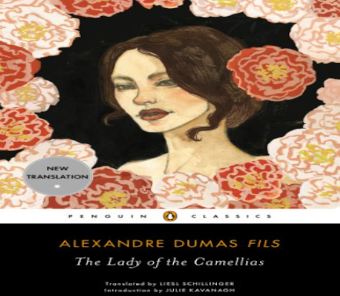

"One of the greatest love stories of all time," according to Henry James, and the inspiration for Verdi’s opera La Traviata. Known to all as “the Lady of the Camellias” because she is never seen without her favorite flowers, Marguerite Gautier, the most beautiful, brazen, and expensive courtesan in all of Paris. But despite having many lovers, she has never really loved—until she meets Armand Duval, young, handsome, and hopelessly in love with her.
 back